<!doctype html>
<html lang="ro">
<head>
<meta charset="utf-8">
<meta name="viewport" content="width=device-width, initial-scale=1, viewport-fit=cover">
<title>Misiunea Diapozitiv</title>
<meta name="description" content="Lecție-joc despre prezentări digitale pentru clasa a VI-a: interfața, salvarea, diapozitive și obiecte, editare, formatare, animații, tranziții și susținerea prezentării.">
<link rel="preconnect" href="https://fonts.googleapis.com">
<link rel="preconnect" href="https://fonts.gstatic.com" crossorigin>
<link rel="stylesheet" href="https://fonts.googleapis.com/css2?family=Fraunces:opsz,wght@9..144,600..900&family=Atkinson+Hyperlegible+Next:wght@400;600;700&family=DM+Mono:wght@500&display=swap">
<link rel="stylesheet" href="../_motor/motor.css">
<style>
:root{
  --desk:#EAF1F1; --paper:#FFFFFF; --paper2:#F0F6F6; --line:#CFDEDF;
  --ink:#132326; --ink2:#50656A; --accent:#0A6C7A; --accentInk:#FFFFFF; --sel:#D6ECEE;
  --mark:#FFE27A; --markInk:#132326; --ok:#1F7A4D; --okbg:#E2F3E8; --bad:#B3261E; --badbg:#FBE6E3;
  --fd:"Fraunces",Georgia,serif; --fb:"Atkinson Hyperlegible Next","Segoe UI",system-ui,sans-serif; --fm:"DM Mono",Consolas,monospace;
}
@media (prefers-color-scheme:dark){:root:not([data-theme="light"]){
  --desk:#0D1719; --paper:#152124; --paper2:#1D2C30; --line:#2C3F43;
  --ink:#E3EEEF; --ink2:#9DB3B7; --accent:#5ACAD6; --accentInk:#0D1719; --sel:#173E44;
  --mark:#F2C94C; --markInk:#132326; --ok:#6FD19A; --okbg:#173226; --bad:#FF8A80; --badbg:#3B1D1B;
}}
:root[data-theme="dark"]{
  --desk:#0D1719; --paper:#152124; --paper2:#1D2C30; --line:#2C3F43;
  --ink:#E3EEEF; --ink2:#9DB3B7; --accent:#5ACAD6; --accentInk:#0D1719; --sel:#173E44;
  --mark:#F2C94C; --markInk:#132326; --ok:#6FD19A; --okbg:#173226; --bad:#FF8A80; --badbg:#3B1D1B;
}
/* tema jocului: banda de sus = panoul cu miniaturi de diapozitive (doar CSS) */
.banda{display:flex;gap:7px;padding:6px 12px;min-height:36px;align-items:center}
.banda span{flex:0 0 auto;width:42px;aspect-ratio:16/9;border:1px solid var(--line);border-radius:2px;background-color:var(--paper);
  background-image:linear-gradient(var(--ink2),var(--ink2)),linear-gradient(var(--line),var(--line)),linear-gradient(var(--line),var(--line));
  background-size:55% 3px,70% 2px,45% 2px;background-position:18% 24%,18% 58%,18% 76%;background-repeat:no-repeat}
.banda span.tt{background-size:62% 4px,38% 2px,0 0;background-position:50% 42%,50% 68%,0 0}
.banda span.on{border-color:var(--accent);box-shadow:0 0 0 1px var(--accent)}
h1{font-size:clamp(1.9rem,8.5vw,3.4rem);font-weight:850;letter-spacing:-.01em}
h1 .acc{color:var(--accent);font-style:normal;font-weight:650}
h2{font-weight:750}
</style>
</head>
<body>
<script src="../_motor/motor.js"></script>
<script>
/* Tipul de întrebare „diapozitiv”: elevul repară un diapozitiv (culori, mărimi, rânduri) și vede rezultatul pe loc.
   Întrebare: {t:'diapozitiv', q, titlu, randuri:[...], start:{tx,bg,mt,ms}, verifica:['contrast','marime','randuri'], min, why}
   Verificare pe comportament: contrastul se CALCULEAZĂ din culorile alese (formula de luminanță WCAG, prag 4,5),
   mărimile se compară cu regulile din pagina de citit, cuvintele se numără pe fiecare rând păstrat.
   Nu există „răspunsul unic” memorat: orice combinație care respectă regulile e acceptată. */
const JocDiapozitiv=(function(){
'use strict';
const TXT=[['negru','#1F1F1F'],['alb','#FFFFFF'],['galben','#F2C300'],['roșu','#D62828'],['gri deschis','#BDBDBD']];
const BG=[['alb','#FFFFFF'],['bleumarin','#1E3A5F'],['portocaliu','#F28C28'],['gri','#9E9E9E']];
const MT=[20,28,36], MS=[12,16,26,44];
function lum(hex){const c=[1,3,5].map(i=>parseInt(hex.slice(i,i+2),16)/255).map(v=>v<=0.03928?v/12.92:Math.pow((v+0.055)/1.055,2.4));return 0.2126*c[0]+0.7152*c[1]+0.0722*c[2]}
function contrast(a,b){const x=lum(a),y=lum(b);return (Math.max(x,y)+0.05)/(Math.min(x,y)+0.05)}
const words=s=>s.split(/\s+/).filter(w=>/[0-9A-Za-zĂÂÎȘȚăâîșț]/.test(w)).length;
const CSS=`.dz-wrap{container-type:inline-size;max-width:520px;margin:0 auto 14px}
.dz-slide{aspect-ratio:16/9;border:1px solid var(--line);border-radius:4px;box-shadow:0 3px 0 var(--line);padding:5cqw 6cqw;overflow:hidden;font-family:Arial,"Segoe UI",sans-serif;line-height:1.2}
.dz-t{font-size:calc(var(--pt) * 100cqw / 640);font-weight:700;margin:0 0 .45em;overflow-wrap:anywhere}
.dz-l{font-size:calc(var(--pt) * 100cqw / 640);margin:0;padding-left:1.1em}
.dz-l li{margin:.12em 0;overflow-wrap:anywhere}
.dz-ctl{display:grid;gap:12px}
.dz-opts{display:flex;flex-wrap:wrap;gap:6px}
.dz-sw{display:inline-flex;align-items:center;gap:6px;padding:6px 10px;border:1px solid var(--line);border-radius:6px;background:var(--paper2);font-size:.9rem;line-height:1.2}
.dz-sw i{width:16px;height:16px;border-radius:3px;border:1px solid var(--ink2);flex:none}
.dz-sw.on{border-color:var(--accent);box-shadow:inset 0 0 0 2px var(--accent);font-weight:600}
.dz-rows{display:flex;flex-direction:column;gap:6px}
.dz-row{display:flex;gap:10px;align-items:flex-start;text-align:left;padding:8px 10px;border:1px solid var(--line);border-radius:6px;background:var(--paper2);line-height:1.3;overflow-wrap:anywhere}
.dz-row b{font-family:var(--fm);font-size:.72rem;width:5.2em;flex:none;padding-top:.2em;color:var(--ok)}
.dz-row span{min-width:0}
.dz-row.off{background:transparent}
.dz-row.off span{text-decoration:line-through;color:var(--ink2)}
.dz-row.off b{color:var(--bad)}`;

function solution(Q){
  let best=[0,0,0];
  TXT.forEach((t,i)=>BG.forEach((b,j)=>{const r=contrast(t[1],b[1]);if(r>best[2])best=[i,j,r]}));
  let keep=Q.randuri.map(r=>words(r)<=6),n=0;
  keep=keep.map(k=>k&&(++n)<=6);
  return {tx:best[0],bg:best[1],mt:MT.indexOf(36),ms:MS.indexOf(26),keep};
}

function render(Q,body,api){
  if(!document.getElementById('tip-diapozitiv-css')){const s=document.createElement('style');s.id='tip-diapozitiv-css';s.textContent=CSS;document.head.appendChild(s)}
  const esc=api.esc,V=Q.verifica||['contrast','marime','randuri'],has=k=>V.includes(k);
  const st=Object.assign({tx:0,bg:0,mt:2,ms:2},Q.start||{});st.keep=Q.randuri.map(()=>true);
  const group=(label,html)=>`<div><div class="lbl">${label}</div><div class="dz-opts">${html}</div></div>`;
  function draw(){
    const sw=(arr,key)=>arr.map(([n,c],i)=>`<button type="button" class="dz-sw ${i===st[key]?'on':''}" data-${key}="${i}" aria-pressed="${i===st[key]}"><i style="background:${c}"></i>${esc(n)}</button>`).join('');
    const sz=(arr,key)=>arr.map((v,i)=>`<button type="button" class="dz-sw ${i===st[key]?'on':''}" data-${key}="${i}" aria-pressed="${i===st[key]}">${v}</button>`).join('');
    body.innerHTML=`<div class="dz-wrap"><div class="dz-slide" role="img" aria-label="Diapozitivul, așa cum arată acum" style="background:${BG[st.bg][1]};color:${TXT[st.tx][1]}">
        <div class="dz-t" style="--pt:${MT[st.mt]}">${esc(Q.titlu)}</div>
        <ul class="dz-l" style="--pt:${MS[st.ms]}">${Q.randuri.map((r,k)=>st.keep[k]?`<li>${esc(r)}</li>`:'').join('')}</ul>
      </div></div>
      <div class="dz-ctl">
        ${has('contrast')?group('Culoarea textului',sw(TXT,'tx'))+group('Fundalul',sw(BG,'bg')):''}
        ${has('marime')?group('Mărimea titlului',sz(MT,'mt'))+group('Mărimea textului',sz(MS,'ms')):''}
        ${has('randuri')?`<div><div class="lbl">Rândurile · apasă ca să păstrezi sau să scoți</div><div class="dz-rows">${Q.randuri.map((r,k)=>`<button type="button" class="dz-row ${st.keep[k]?'on':'off'}" data-k="${k}" aria-pressed="${st.keep[k]}"><b>${st.keep[k]?'păstrez':'scot'}</b><span>${esc(r)}</span></button>`).join('')}</div></div>`:''}
      </div>`;
    body.querySelectorAll('[data-tx]').forEach(b=>b.onclick=()=>{if(api.done())return;st.tx=+b.dataset.tx;draw()});
    body.querySelectorAll('[data-bg]').forEach(b=>b.onclick=()=>{if(api.done())return;st.bg=+b.dataset.bg;draw()});
    body.querySelectorAll('[data-mt]').forEach(b=>b.onclick=()=>{if(api.done())return;st.mt=+b.dataset.mt;draw()});
    body.querySelectorAll('[data-ms]').forEach(b=>b.onclick=()=>{if(api.done())return;st.ms=+b.dataset.ms;draw()});
    body.querySelectorAll('[data-k]').forEach(b=>b.onclick=()=>{if(api.done())return;const k=+b.dataset.k;st.keep[k]=!st.keep[k];draw()});
  }
  function problems(){
    const out=[];
    if(has('contrast')){
      const r=contrast(TXT[st.tx][1],BG[st.bg][1]);
      if(r<4.5)out.push(`Textul ${TXT[st.tx][0]} pe fundal ${BG[st.bg][0]} se vede slab. Alege text închis pe fundal deschis sau text deschis pe fundal închis.`);
    }
    if(has('marime')){
      const t=MT[st.mt],x=MS[st.ms];
      if(t<32)out.push(`Titlul de ${t} e prea mic: un titlu are în jur de 32–40.`);
      if(x<24)out.push(`Textul de ${x} nu se citește din ultima bancă: pune-l în jur de 24–28.`);
      else if(x>=t)out.push(`Textul de ${x} e cel puțin cât titlul. Titlul trebuie să fie cel mai mare, ca să se vadă despre ce e vorba.`);
    }
    if(has('randuri')){
      const kept=Q.randuri.filter((_,k)=>st.keep[k]),lung=kept.filter(r=>words(r)>6),min=Q.min||3;
      if(lung.length)out.push(`${lung.length===1?'Un rând păstrat are':lung.length+' rânduri păstrate au'} mai mult de 6 cuvinte (de exemplu „${esc(lung[0].split(/\s+/).slice(0,3).join(' '))}…”). Pe diapozitiv rămân ideile scurte, restul îl spui tu.`);
      if(kept.length<min)out.push(`Au rămas ${kept.length} rânduri. Păstrează cel puțin ${min} idei scurte, ca diapozitivul să spună ceva.`);
      if(kept.length>6)out.push(`Ai păstrat ${kept.length} rânduri. Cel mult 6 încap bine pe un diapozitiv.`);
    }
    return out;
  }
  draw();
  const nav=api.checkButton(()=>{
    const pr=problems();
    if(!pr.length){nav.innerHTML='';api.resolve(true)}
    else{api.resolve(false,pr.slice(0,2).join(' ')+(pr.length>2?` (încă ${pr.length-2})`:''));
      api.revealButton(()=>{const s=solution(Q);
        if(has('contrast')){st.tx=s.tx;st.bg=s.bg}
        if(has('marime')){st.mt=s.mt;st.ms=s.ms}
        if(has('randuri'))st.keep=s.keep;
        draw();nav.innerHTML='';
        const parts=[];
        if(has('contrast'))parts.push(`text ${TXT[st.tx][0]} pe fundal ${BG[st.bg][0]}`);
        if(has('marime'))parts.push(`titlul ${MT[st.mt]}, textul ${MS[st.ms]}`);
        if(has('randuri'))parts.push('doar rândurile scurte');
        api.giveUp(`o variantă bună e acum pe diapozitiv: ${parts.join('; ')}.`)})}
  });
}
function rezolva(Q,body){
  const s=solution(Q);
  const click=sel=>{const b=body.querySelector(sel);if(b)b.click()};
  click(`[data-tx="${s.tx}"]`);click(`[data-bg="${s.bg}"]`);click(`[data-mt="${s.mt}"]`);click(`[data-ms="${s.ms}"]`);
  s.keep.forEach((k,i)=>{const b=body.querySelector(`[data-k="${i}"]`);if(b&&(b.getAttribute('aria-pressed')==='true')!==k)b.click()});
}
/* Răspuns greșit tipic de copil, pentru poartă: pornește de la o variantă bună și strică un singur lucru,
   cel verificat de întrebare — text galben pe fundal alb (contrast ~1,8), titlu de 20 sau toate rândurile scoase. */
function gresit(Q,body){
  rezolva(Q,body);
  const V=Q.verifica||['contrast','marime','randuri'];
  const click=sel=>{const b=body.querySelector(sel);if(b)b.click()};
  if(V.includes('contrast')){click(`[data-tx="${TXT.findIndex(t=>t[0]==='galben')}"]`);click(`[data-bg="${BG.findIndex(b=>b[0]==='alb')}"]`)}
  else if(V.includes('marime')){click(`[data-mt="${MT.indexOf(20)}"]`)}
  else{Q.randuri.forEach((_,i)=>{const b=body.querySelector(`[data-k="${i}"]`);if(b&&b.getAttribute('aria-pressed')==='true')b.click()})}
}
return {render,rezolva,gresit,contrast,words};
})();

const LEVELS=[
{t:'Prezentarea bună și fereastra aplicației',lectii:[2],continuturi:['Elemente de interfață a unei aplicații de realizare a prezentărilor','Instrumente de bază ale aplicației de realizare a prezentărilor'],text:`
<p>O <mark>prezentare</mark> este un șir de <mark>diapozitive</mark> pe care le arăți unui public în timp ce vorbești.</p>
<p>Diapozitivul e <strong>sprijinul</strong> pentru ce spui. Dacă publicul citește paragrafe, nu te mai ascultă. Regula de aur: <strong>pe diapozitiv pui ideea, explicația o spui tu</strong>.</p>
<p>În fereastra aplicației găsești: <strong>panoul cu miniaturi</strong> (în stânga), <strong>zona de lucru</strong> (diapozitivul mare, pe care îl editezi), <strong>panglica</strong> cu file de comenzi (sus), <mark>zona de note</mark> (sub diapozitiv: notițele tale, nevăzute de public) și <strong>bara de stare</strong> (jos).</p>
<figure class="captura"><a href="../prezentari-vi/img/fereastra.webp" target="_blank">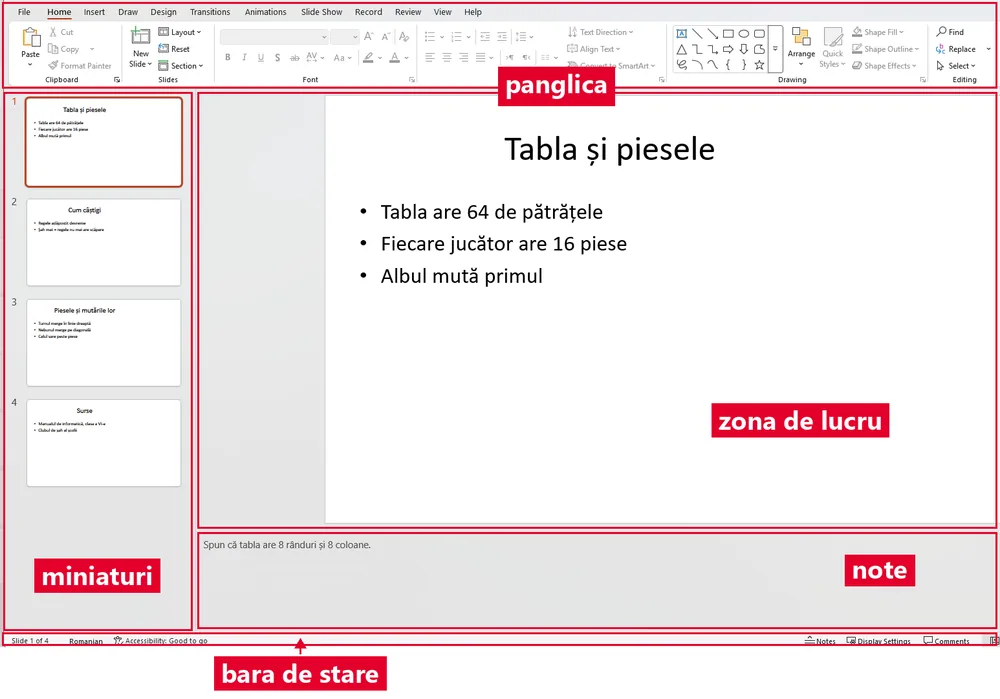</a>
<figcaption>PowerPoint (în engleză): <b>panglica</b> sus, <b>miniaturile</b> în stânga, <b>zona de lucru</b> cu diapozitivul mare, <b>notele</b> (Notes) dedesubt și <b>bara de stare</b> jos, unde scrie „Slide 2 of 4”.</figcaption></figure>
<p><mark>Instrumentele de bază</mark> stau pe filele panglicii. În PowerPoint: <strong>Pornire</strong> (Home: fonturi, paragrafe), <strong>Inserare</strong> (Insert: imagini, tabele, linkuri), <strong>Proiectare</strong> (Design: teme), <strong>Tranziții</strong> (Transitions), <strong>Animații</strong> (Animations), <strong>Expunere diapozitive</strong> (Slide Show).</p>
<p>Google Slides și LibreOffice Impress au cam aceleași operații ca PowerPoint. Înveți operația, nu butonul.</p>`,
qs:[
 {t:'choice',q:'Ce ar trebui să fie scris pe un diapozitiv?',o:['Ideea principală, pe scurt','Tot ce vei spune, cuvânt cu cuvânt','Un paragraf lung, ca să nu uiți nimic','Doar decoruri frumoase'],ok:0,why:'Publicul nu poate citi și asculta în același timp. Pe ecran stă ideea, iar explicația o dai tu, cu voce tare.'},
 {t:'match',q:'Leagă fiecare parte a ferestrei de ce faci cu ea.',pairs:[['Panoul cu miniaturi','schimbi ordinea diapozitivelor'],['Zona de lucru','editezi diapozitivul curent'],['Panglica','găsești comenzile, pe file'],['Zona de note','îți scrii ce ai de spus']],why:'Miniaturile arată toată prezentarea, zona de lucru arată un singur diapozitiv mare, iar notele sunt doar pentru tine.'},
 {t:'match',q:'În PowerPoint, pe ce filă a panglicii cauți instrumentul?',pairs:[['Inserare','pui o imagine sau un tabel'],['Proiectare','alegi o temă pentru toată prezentarea'],['Pornire','schimbi fontul unui text'],['Expunere diapozitive','pornești prezentarea pe tot ecranul']],why:'Numele filei spune ce fel de instrumente are: pe Inserare adaugi obiecte, pe Proiectare schimbi aspectul întregii prezentări, pe Pornire formatezi textul, iar pe Expunere diapozitive arăți prezentarea publicului.'},
 {t:'tf',q:'Publicul vede pe ecran ce ai scris în zona de note.',ok:false,why:'Fals. Notele le vezi doar tu. De aceea acolo îți poți scrie explicațiile, fără să aglomerezi diapozitivul.'},
 {t:'classify',q:'E semnul unei prezentări bune sau al uneia slabe?',cats:['Bună','Slabă'],items:[['O idee principală pe diapozitiv',0],['Paragrafe întregi de text',1],['Litere mari, ușor de citit',0],['Cinci idei pe același diapozitiv',1],['O imagine care explică ideea',0],['Fundal care „înghite” textul',1]],why:'O prezentare bună se înțelege dintr-o privire: puțin text, litere mari, contrast și imagini care chiar explică ceva.'},
 {t:'choice',q:'Colegul tău lucrează în Google Slides, iar tu în PowerPoint. Ce e adevărat?',o:['Cele mai multe operații se fac la fel, doar butoanele arată puțin altfel','Aplicațiile nu au nimic în comun, fiecare face altceva','Google Slides nu are diapozitive, doar pagini de text','Doar PowerPoint poate face prezentări cu teme și animații'],ok:0,why:'Toate aplicațiile de prezentări lucrează cu diapozitive, obiecte, formatare și efecte. Dacă știi ce operație vrei, găsești butonul ei.'}
]},
{t:'Creez, salvez, închid',lectii:[3],continuturi:['Operații de gestionare a prezentărilor: creare, deschidere, expunere, salvare în diverse formate, închidere'],text:`
<p>Operațiile de <mark>gestionare</mark> sunt aceleași în orice aplicație: <strong>creare</strong>, <strong>deschidere</strong>, <strong>salvare</strong>, <strong>salvare ca…</strong> (sub alt nume sau în alt format) și <strong>închidere</strong>. În PowerPoint, scurtăturile sunt <kbd>Ctrl</kbd>+<kbd>N</kbd> (nou), <kbd>Ctrl</kbd>+<kbd>O</kbd> (deschide) și <kbd>Ctrl</kbd>+<kbd>S</kbd> (salvează).</p>
<p>Salvează <strong>des</strong>, nu doar la final. Ce nu ai salvat se pierde dacă se oprește calculatorul. Google Slides e o excepție: salvează singur, în Drive.</p>
<p>Alegi <mark>formatul</mark> după scop: <code>.pptx</code> (PowerPoint) sau <code>.odp</code> (Impress), dacă vrei să mai <strong>modifici</strong> prezentarea; <code>.pdf</code>, dacă vrei ca aspectul să rămână <strong>la fel pe orice calculator</strong>.</p>
<figure class="captura"><a href="../prezentari-vi/img/salvare-ca-formate.webp" target="_blank">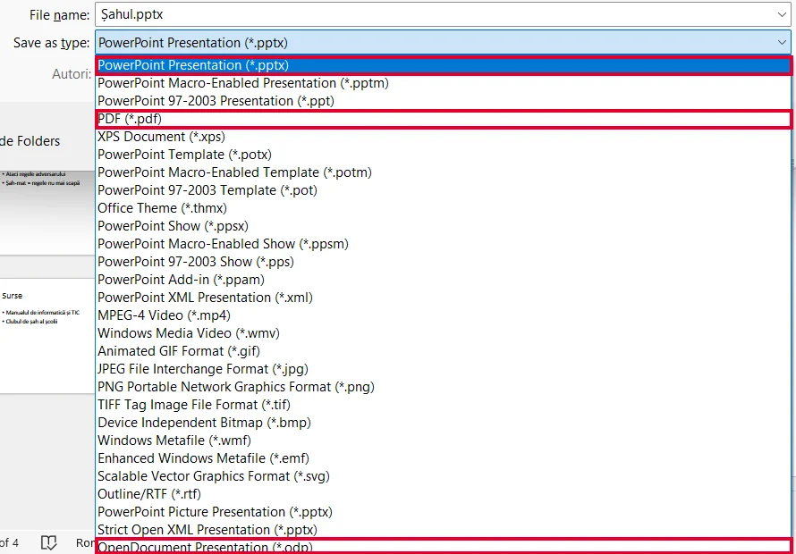</a>
<figcaption>Salvare ca (Save As, tasta <kbd>F12</kbd>): în lista <b>Save as type</b> (tipul fișierului) alegi <code>.pptx</code>, <code>.pdf</code> sau, ultimul, <code>.odp</code>.</figcaption></figure>
<p>Dă fișierului un nume care spune ce conține: <code>Reciclare_6A_Popescu.pptx</code>, nu <code>final_bun_2.pptx</code>.</p>`,
qs:[
 {t:'choice',q:'Lucrezi de 20 de minute la prezentare. Ce apeși des, ca să nu pierzi munca?',o:['Ctrl + S','Ctrl + N','Ctrl + O','Esc'],ok:0,why:'Ctrl + S scrie modificările pe disc. Ctrl + N face o prezentare nouă, iar Ctrl + O deschide una salvată, deci niciuna nu îți păstrează munca.'},
 {t:'match',q:'Leagă scurtătura de operația ei.',pairs:[['Ctrl + N','prezentare nouă'],['Ctrl + O','deschiderea unei prezentări'],['Ctrl + S','salvare']],why:'Literele vin din engleză: N de la „new” (nou), O de la „open” (deschide), S de la „save” (salvează). Așa le ții minte mai ușor.'},
 {t:'choice',q:'Trimiți prezentarea profesorului, care doar o citește. Vrei să arate exact ca la tine. Ce format alegi?',o:['.pdf','.pptx','.txt','.odp'],ok:0,why:'Un PDF păstrează aspectul pe orice calculator, chiar dacă acolo lipsesc fonturile tale. Un fișier .pptx sau .odp se poate modifica, dar poate arăta altfel pe alt calculator.'},
 {t:'tf',q:'„Salvare ca…” te lasă să salvezi prezentarea sub alt nume sau în alt format.',ok:true,why:'Adevărat. Salvarea simplă păstrează numele și formatul. „Salvare ca…” le poate schimba, de exemplu ca să faci și o copie PDF.'},
 {t:'classify',q:'Nume bun sau nume slab pentru fișier?',cats:['Bun','Slab'],items:[['Reciclare_6A_Popescu.pptx',0],['final_final_2.pptx',1],['Prezentare1.pptx',1],['Vulcani_geografie_6B.pptx',0]],why:'Un nume bun spune subiectul și autorul sau clasa. Așa îți găsești fișierul și peste o lună, printre ale colegilor.'}
]},
{t:'Diapozitive și obiecte',lectii:[4],continuturi:['Structura unei prezentări: diapozitive, obiecte utilizate în prezentări (casete de text, imagini importate, forme, sunete, tabele, legături)'],text:`
<p>Pe un diapozitiv nu „scrii” direct, ci <strong>așezi obiecte</strong>: <mark>casete de text</mark>, imagini, forme, tabele, sunete sau legături. Și titlul stă tot într-o casetă de text. Fiecare obiect se poate muta, mări și formata separat.</p>
<p>O prezentare bună are o <mark>structură</mark>: diapozitivul de <strong>titlu</strong> (subiectul și autorul), <strong>cuprinsul</strong>, <strong>conținutul</strong> (o idee pe diapozitiv), <strong>concluzia</strong> și <strong>sursele</strong> (de unde ai luat informațiile și imaginile).</p>
<p>Fiecare diapozitiv are un <mark>aspect</mark>, adică o machetă gata făcută: doar titlu, titlu și conținut, două conținuturi alăturate (bune pentru comparații) sau gol. Numele exacte diferă puțin de la o aplicație la alta.</p>
<figure class="captura"><a href="../prezentari-vi/img/aspect-machete.webp" target="_blank">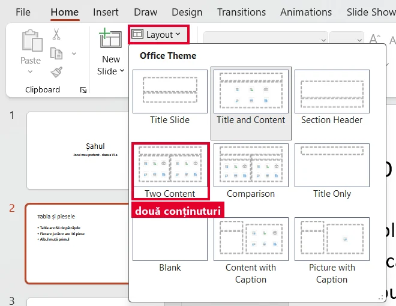</a>
<figcaption>În PowerPoint: Pornire (Home) → <b>Aspect</b> (Layout). <i>Title Only</i> = doar titlu, <i>Title and Content</i> = titlu și conținut, <i>Two Content</i> = două conținuturi alăturate, <i>Blank</i> = gol.</figcaption></figure>`,
qs:[
 {t:'tf',q:'Titlul unui diapozitiv stă tot într-o casetă de text.',ok:true,why:'Adevărat. De aceea titlul se poate selecta, muta și formata la fel ca orice altă casetă.'},
 {t:'order',q:'Pune părțile unei prezentări în ordine.',items:['Titlul: subiectul și autorul','Cuprinsul','Conținutul: o idee pe diapozitiv','Concluzia','Sursele'],why:'Publicul află întâi despre ce e vorba, apoi urmărește ideile. La final vede ce trebuie să rețină și de unde ai luat informațiile.'},
 {t:'choice',q:'Vrei să arăți „înainte” și „după”, una lângă alta. Ce aspect alegi?',o:['Două conținuturi alăturate','Doar titlu','Gol','Titlu și conținut'],ok:0,why:'Două zone de conținut puse alături fac comparația ușor de văzut dintr-o privire.'},
 {t:'classify',q:'Obiect pe diapozitiv sau parte a ferestrei aplicației?',cats:['Obiect pe diapozitiv','Parte a ferestrei'],items:[['Caseta de text',0],['Imaginea',0],['Tabelul',0],['Panglica',1],['Zona de note',1],['O formă (săgeată, stea)',0]],why:'Obiectele stau pe diapozitiv și le vede publicul. Panglica și zona de note țin de fereastra aplicației și sunt pentru tine.'},
 {t:'tf',q:'Dacă o imagine e luată de pe internet, nu trebuie să scrii de unde e.',ok:false,why:'Fals. Sursele se trec și pentru imagini. Așa ești corect față de autorul lor, iar publicul poate verifica.'}
]},
{t:'Editez: inserez, copiez, mut, șterg',lectii:[5],continuturi:['Operații de editare a unei prezentări: inserare, copiere, mutare, ștergere a unui diapozitiv/obiect'],text:`
<p>A <mark>edita</mark> înseamnă a schimba <strong>ce</strong> conține prezentarea.</p>
<p>În PowerPoint, un diapozitiv nou îl adaugi cu <kbd>Ctrl</kbd>+<kbd>M</kbd> sau cu clic dreapta pe o miniatură. Tot din clic dreapta îl poți <strong>dubla</strong> (o copie identică) sau <strong>ascunde</strong> (rămâne în fișier, dar nu apare când prezinți).</p>
<figure class="captura"><a href="../prezentari-vi/img/meniu-miniatura.webp" target="_blank">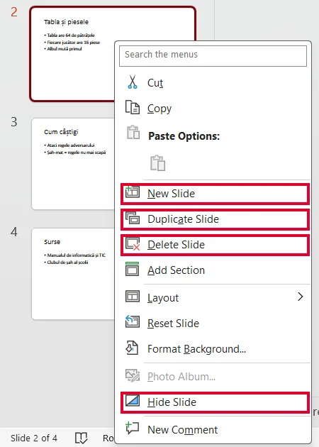</a>
<figcaption>Clic dreapta pe miniatură: <i>New Slide</i> (diapozitiv nou), <i>Duplicate Slide</i> (dublare), <i>Delete Slide</i> (ștergere), <i>Hide Slide</i> (ascundere).</figcaption></figure>
<p>Un diapozitiv sau un obiect îl <mark>copiezi</mark> cu <kbd>Ctrl</kbd>+<kbd>C</kbd> și îl lipești cu <kbd>Ctrl</kbd>+<kbd>V</kbd>, chiar și pe alt diapozitiv. Ca să <strong>muți</strong> un diapozitiv, tragi miniatura lui. Ca să-l <strong>ștergi</strong>, îl selectezi și apeși <kbd>Delete</kbd>. <kbd>Ctrl</kbd>+<kbd>Z</kbd> anulează ultima acțiune.</p>
<p>Un obiect selectat are <mark>mânere</mark>. O imagine o mărești trăgând de <strong>colț</strong>; din mijlocul laturii se turtește.</p>
<figure class="captura"><a href="../prezentari-vi/img/obiect-manere.webp" target="_blank">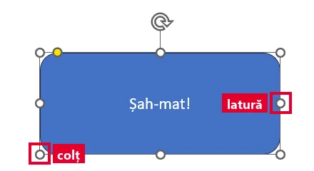</a>
<figcaption>Forma selectată are mânere albe: în <b>colțuri</b> și la <b>mijlocul laturilor</b>. Săgeata rotundă de sus o rotește.</figcaption></figure>
<p>Obiectele stau în <strong>straturi</strong>: cu clic dreapta aduci un obiect în față sau îl trimiți în spate.</p>`,
qs:[
 {t:'choice',q:'Mărești o poză trăgând de mânerul din mijlocul laturii din dreapta. Ce se întâmplă?<figure class="captura"><a href="../prezentari-vi/img/obiect-manere.webp" target="_blank"></a><figcaption>Un obiect selectat: <b>mânerele</b> din colțuri și cele de pe mijlocul laturilor.</figcaption></figure>',o:['Poza se turtește (se deformează)','Poza se mărește perfect','Poza se șterge','Poza se mută pe alt diapozitiv'],ok:0,why:'Mânerul din mijlocul laturii din dreapta schimbă doar lățimea. Mânerul din colț schimbă lățimea și înălțimea deodată, deci poza își păstrează forma.'},
 {t:'order',q:'Diapozitivul 7 trebuie să devină al doilea. Pune pașii în ordine.',items:['Găsești miniatura diapozitivului 7 în panoul din stânga','Ții apăsat pe ea','O tragi în sus, între diapozitivele 1 și 2','Îi dai drumul și verifici ordinea'],why:'Ordinea se schimbă din panoul cu miniaturi: prinzi miniatura, o tragi, îi dai drumul, apoi verifici că prezentarea are sens.'},
 {t:'match',q:'Leagă ce vrei să faci de tasta sau scurtătura potrivită.',pairs:[['Anulezi ultima greșeală','Ctrl + Z'],['Ștergi diapozitivul selectat','Delete'],['Adaugi un diapozitiv nou în PowerPoint','Ctrl + M'],['Copiezi un obiect selectat','Ctrl + C']],why:'Scurtăturile te scapă de căutat prin meniuri. Ctrl + Z e cea mai utilă, fiindcă repară aproape orice greșeală.'},
 {t:'tf',q:'Un diapozitiv ascuns dispare din fișier.',ok:false,why:'Fals. Diapozitivul ascuns rămâne în fișier și îl poți face din nou vizibil. Doar nu apare când prezinți.'},
 {t:'choice',q:'Titlul nu se mai vede, pentru că ai pus peste el o imagine mare. Ce faci?',o:['Trimiți imaginea în spate, sub text','Scrii titlul din nou','Ștergi diapozitivul','Mărești și mai mult imaginea'],ok:0,why:'Obiectele stau în straturi. Dacă imaginea trece în stratul din spate, titlul revine deasupra ei. Comanda o găsești cu clic dreapta pe imagine.'}
]},
{t:'Formatez ca să se citească',lectii:[6],continuturi:['Formatarea textului, obiectelor, diapozitivelor'],text:`
<p><mark>Formatarea</mark> schimbă <strong>cum arată</strong> ceva, nu ce scrie. Scopul ei: să se citească ușor din ultima bancă.</p>
<p><strong>Textul:</strong> font simplu, același peste tot; titlul în jur de 32–40, textul în jur de 24–28 (sub 20 se citește greu). <strong>Aldinul</strong> doar pentru cuvântul-cheie.</p>
<p><mark>Contrastul</mark>: text închis pe fundal deschis sau text deschis pe fundal închis. Galbenul pe alb și griul pe gri nu se văd.</p>
<p><strong>Obiectele:</strong> la o formă schimbi <mark>umplerea</mark> (culoarea din interior; Shape Fill, Umplere formă) și <mark>conturul</mark> (linia de margine: culoare, grosime; Shape Outline, Contur formă).</p>
<figure class="captura"><a href="../prezentari-vi/img/umplere-contur-butoane.webp" target="_blank">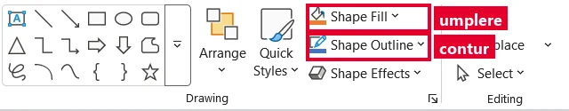</a>
<figcaption>Pornire (Home), grupul Drawing: <b>Shape Fill</b> (Umplere formă) și <b>Shape Outline</b> (Contur formă). Butoanele merg doar când e selectată o formă.</figcaption></figure>
<figure class="captura"><a href="../prezentari-vi/img/umplere-contur.webp" target="_blank">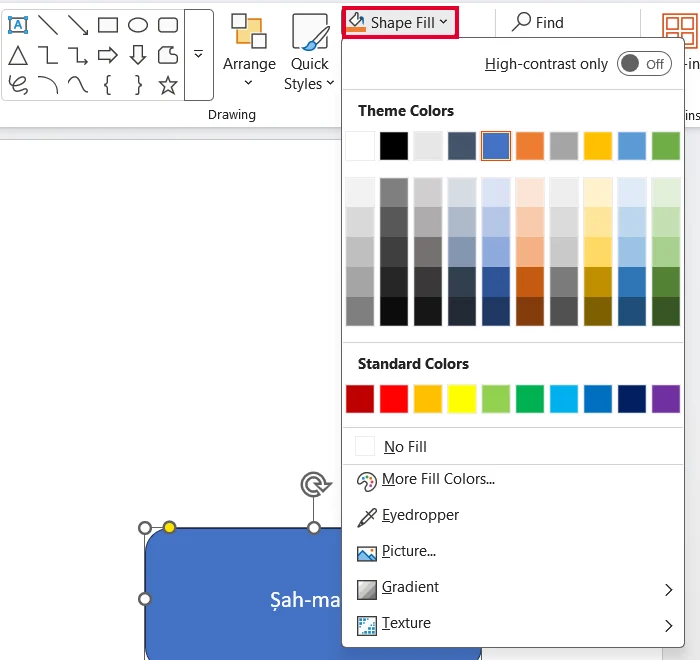</a>
<figcaption>Shape Fill deschis: alegi culoarea interiorului formei selectate. <i>No Fill</i> = fără umplere.</figcaption></figure>
<p><strong>Diapozitivul:</strong> îi schimbi <mark>fundalul</mark>, o culoare sau o imagine ștearsă, care nu înghite textul. O <mark>temă</mark> aplică aceleași culori, fonturi și fundaluri pe toate diapozitivele deodată. În PowerPoint, temele sunt pe fila <strong>Proiectare</strong>.</p>`,
qs:[
 {t:'choice',q:'Ce pereche de culori se citește cel mai bine?',o:['Text negru pe fundal alb','Text galben pe fundal alb','Text gri pe fundal gri','Text roșu pe fundal portocaliu'],ok:0,why:'Când textul și fundalul sunt foarte diferite ca luminozitate, literele se văd clar, chiar și pe un proiector slab.'},
 {t:'tf',q:'Dacă pui tot textul pe aldin, se vede mai bine ce e important.',ok:false,why:'Fals. Aldinul atrage privirea doar când e folosit puțin. Pus peste tot, nu mai scoate nimic în evidență.'},
 {t:'diapozitiv',q:'Repară diapozitivul lui Mihai: alege culori cu contrast puternic și mărimi potrivite pentru titlu și text, apoi verifică.',
  titlu:'Sistemul solar',randuri:['Soarele este o stea','Opt planete','Pământul e a treia planetă'],
  start:{tx:2,bg:0,mt:0,ms:0},verifica:['contrast','marime'],
  why:'Jocul a calculat contrastul dintre culorile alese de tine și a verificat mărimile: titlul cel mai mare, textul destul de mare cât să se citească din sală.'},
 {t:'classify',q:'Ce formatezi în fiecare caz: textul, un obiect sau diapozitivul?',cats:['Textul','Un obiect','Diapozitivul'],items:[['Mărești literele titlului',0],['Pui aldin pe un cuvânt-cheie',0],['Schimbi culoarea din interiorul unei săgeți',1],['Îngroși linia de margine a unui dreptunghi',1],['Schimbi fundalul în albastru deschis',2],['Pui ca fundal o fotografie ștearsă',2]],why:'Fontul, mărimea și aldinul țin de text. Umplerea și conturul țin de o formă, adică de un obiect. Fundalul ține de diapozitivul întreg, nu de un obiect de pe el.'},
 {t:'choice',q:'Ai 12 diapozitive și vrei aceleași culori și fonturi pe toate. Care e calea cea mai rapidă?',o:['Aplici o temă','Schimbi fiecare diapozitiv, pe rând','Faci o prezentare nouă','Pui tot textul pe aldin'],ok:0,why:'Tema se aplică o singură dată pentru toată prezentarea. Așa nu uiți niciun diapozitiv, iar aspectul rămâne unitar.'}
]},
{t:'Animații și tranziții',lectii:[7],continuturi:['Efecte de animație','Efecte de tranziție'],text:`
<p>Două efecte care se confundă des:</p>
<ul>
<li><mark>tranziția</mark> = trecerea de la un diapozitiv la altul (în PowerPoint, fila <strong>Tranziții</strong>);</li>
<li><mark>animația</mark> = mișcarea unui <strong>obiect</strong> pe același diapozitiv (fila <strong>Animații</strong>).</li>
</ul>
<figure class="captura"><a href="../prezentari-vi/img/fila-tranzitii.webp" target="_blank">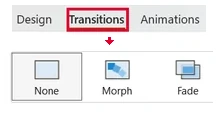</a>
<figcaption>Fila <b>Tranziții</b> (Transitions): efectele de trecere la diapozitivul selectat.</figcaption></figure>
<p>Animațiile sunt de patru feluri: de <strong>intrare</strong> (obiectul apare), de <strong>evidențiere</strong> (atrage atenția), de <strong>ieșire</strong> (dispare) și pe o <strong>cale definită</strong>, adică o traiectorie (se deplasează pe un drum).</p>
<figure class="captura"><a href="../prezentari-vi/img/animatii-familii.webp" target="_blank">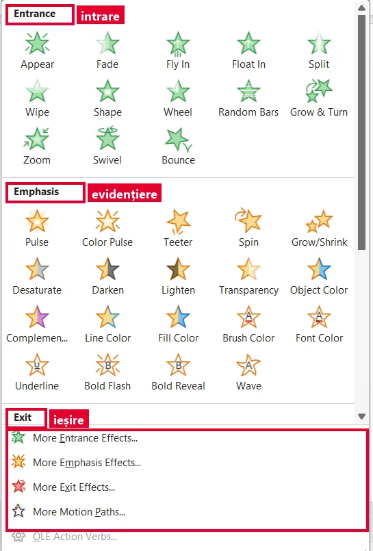</a>
<figcaption>Fila <b>Animații</b> (Animations) → Add Animation: <i>Entrance</i> = intrare, <i>Emphasis</i> = evidențiere, <i>Exit</i> = ieșire, <i>Motion Paths</i> = căi definite.</figcaption></figure>
<p>Un efect ajută când are un <strong>motiv</strong>: punctele unei liste apar pe rând, ca publicul să nu citească înainte. Fără motiv, efectul încurcă.</p>
<p>Reguli: aceeași tranziție în toată prezentarea, efecte scurte, fără sunete la fiecare pas. Verifici totul pornind prezentarea cu <kbd>F5</kbd>.</p>`,
qs:[
 {t:'choice',q:'Punctele unei liste apar unul câte unul, pe același diapozitiv. Ce efect e acesta?',o:['Animație','Tranziție','Temă','Aspect'],ok:0,why:'Se mișcă obiecte de pe același diapozitiv, deci e animație. O tranziție ar schimba diapozitivul întreg.'},
 {t:'classify',q:'Tranziție sau animație?',cats:['Tranziție','Animație'],items:[['Diapozitivul 3 se estompează și apare diapozitivul 4',0],['O săgeată se mișcă pe hartă',1],['Titlul pulsează o clipă',1],['Diapozitivul întreg alunecă spre stânga',0],['O imagine dispare de pe diapozitiv',1]],why:'Întreabă-te: se schimbă diapozitivul întreg (tranziție) sau doar un obiect de pe el (animație)?'},
 {t:'match',q:'Leagă felul animației de ce face obiectul.',pairs:[['Intrare','apare'],['Evidențiere','atrage atenția, deși se vede deja'],['Ieșire','dispare'],['Cale definită','se deplasează pe un drum']],why:'Numele spune ce se întâmplă: intrarea aduce obiectul, ieșirea îl scoate, evidențierea îl scoate în față, iar calea definită îl plimbă pe un drum.'},
 {t:'tf',q:'E bine să pui altă tranziție la fiecare diapozitiv, ca prezentarea să fie variată.',ok:false,why:'Fals. Efectele schimbate mereu atrag atenția asupra lor și o iau de pe ce spui. O singură tranziție păstrează prezentarea unitară.'},
 {t:'choice',q:'Cum verifici că animațiile apar în ordinea bună?',o:['Pornești prezentarea cu F5 și treci prin diapozitive','Te uiți la miniaturile din stânga ferestrei','Salvezi prezentarea ca PDF și o deschizi','Mărești textul ca să vezi animațiile mai bine'],ok:0,why:'Efectele se văd doar când prezentarea rulează. Miniaturile sunt nemișcate, iar într-un PDF animațiile nu există.'}
]},
{t:'Expun prezentarea',lectii:[8],continuturi:['Modalități de expunere a unei prezentări','Operații de gestionare a prezentărilor: creare, deschidere, expunere, salvare în diverse formate, închidere','Reguli elementare de susținere a unei prezentări'],text:`
<p><mark>Expunerea</mark> înseamnă să arăți prezentarea pe tot ecranul, așa cum o vede publicul. În PowerPoint, <kbd>F5</kbd> o pornește de la început, <kbd>Shift</kbd>+<kbd>F5</kbd> de la diapozitivul curent, iar <kbd>Esc</kbd> o încheie.</p>
<figure class="captura"><a href="../prezentari-vi/img/fila-expunere.webp" target="_blank">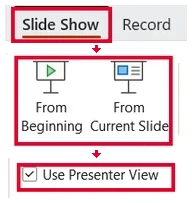</a>
<figcaption>Fila <b>Expunere diapozitive</b> (Slide Show): <i>From Beginning</i> = de la început (<kbd>F5</kbd>), <i>From Current Slide</i> = de la diapozitivul curent (<kbd>Shift</kbd>+<kbd>F5</kbd>), <i>Use Presenter View</i> = vizualizarea prezentator.</figcaption></figure>
<p>În expunere treci mai departe cu clic, <kbd>Enter</kbd> sau săgeata spre dreapta și te întorci cu săgeata spre stânga. Tasta <kbd>B</kbd> face ecranul negru, ca toți să te privească pe tine; o apeși din nou și revii.</p>
<p>Diapozitivele avansează <mark>la clic</mark>, când decizi tu, sau <mark>automat</mark>, după un număr de secunde (fila Tranziții). Automat e bine pe un ecran din holul școlii, unde nu vorbește nimeni. Când prezinți tu, treci mai departe abia după ce ai terminat ideea.</p>
<figure class="captura"><a href="../prezentari-vi/img/avansare-automata.webp" target="_blank">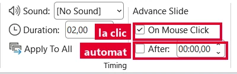</a>
<figcaption>Fila Tranziții (Transitions), grupul Timing: <i>On Mouse Click</i> = la clic; <i>After</i> = automat, după timpul scris în casetă.</figcaption></figure>
<p>Cu un al doilea ecran (videoproiectorul), <mark>Vizualizarea prezentator</mark> (Presenter View) îți arată ție notele, iar publicul vede doar diapozitivele.</p>`,
qs:[
 {t:'choice',q:'Ai lucrat la diapozitivul 6 și vrei să vezi cum arată pe tot ecranul, fără să treci iar prin primele cinci. Ce apeși?',o:['Shift + F5','F5','Esc','Ctrl + S'],ok:0,why:'Shift + F5 pornește expunerea de la diapozitivul la care ești. F5 ar porni de la primul, Esc încheie expunerea, iar Ctrl + S doar salvează.'},
 {t:'match',q:'Leagă tasta de ce face în PowerPoint.',pairs:[['F5','pornește expunerea de la început'],['Shift + F5','pornește expunerea de la diapozitivul curent'],['Esc','încheie expunerea'],['B','face ecranul negru, apoi îl readuce']],why:'F5 și Shift + F5 pornesc expunerea din locuri diferite, Esc te scoate din ea, iar B te ajută când vrei ca publicul să se uite la tine, nu la ecran.'},
 {t:'classify',q:'Cum e mai bine să avanseze diapozitivele?',cats:['La clic','Automat'],items:[['Îți prezinți proiectul în fața clasei',0],['Un ecran din holul școlii arată anunțuri, unul după altul',1],['Te oprești să răspunzi la o întrebare a unui coleg',0],['Pozele de la excursie rulează pe ecran la ședința cu părinții, cât timp se adună lumea',1]],why:'Când vorbește cineva, ritmul îl dă omul, deci la clic. Când nu prezintă nimeni, diapozitivele trec singure, după un număr de secunde.'},
 {t:'tf',q:'În Vizualizarea prezentator, publicul vede pe ecran și notele tale.',ok:false,why:'Fals. Notele apar doar pe ecranul tău, de exemplu pe laptop. Pe videoproiector publicul vede numai diapozitivele.'},
 {t:'choice',q:'Ioana explica un grafic, iar diapozitivul a trecut singur mai departe, la jumătatea explicației. Ce setare trebuia să aleagă?',o:['Avansarea la clic','Avansarea automată după 5 secunde','O altă temă','Un font mai mare'],ok:0,why:'La clic, diapozitivul rămâne pe ecran cât timp vorbești și trece mai departe doar când ai terminat. Avansarea automată l-a mutat după câteva secunde, iar tema și fontul schimbă doar cum arată diapozitivul.'}
]},
{t:'Mini-proiect: prezint un joc',final:true,lectii:[8,9],continuturi:['Reguli elementare de estetică și ergonomie utilizate în realizarea unei prezentări','Reguli elementare de susținere a unei prezentări'],text:`
<p><strong>Misiunea finală:</strong> prezinți clasei, în 3–5 minute, jocul tău preferat: <strong>șahul</strong>.</p>
<p><mark>Estetica</mark>: puțin text (cel mult 6 rânduri, cel mult 6 cuvinte pe rând), contrast puternic, font lizibil, aceleași culori pe toate diapozitivele, imagini care explică.</p>
<p><mark>Ergonomia</mark>: totul se vede din ultima bancă, iar efectele nu obosesc ochii.</p>
<figure class="captura"><a href="../prezentari-vi/img/diapozitiv-sah.webp" target="_blank">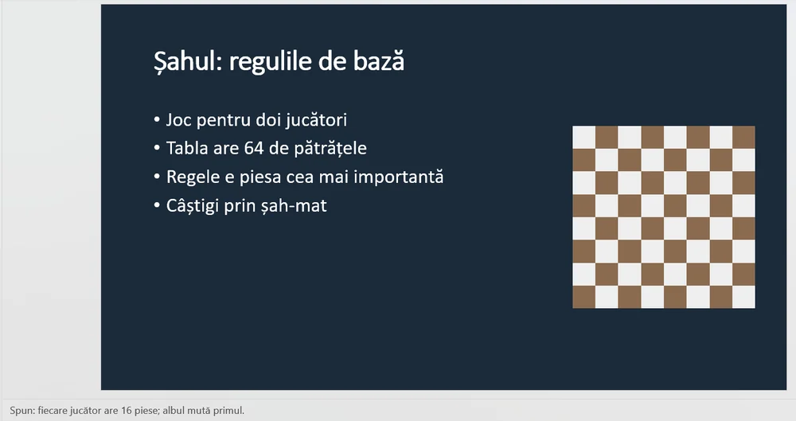</a>
<figcaption>Un diapozitiv-model: titlu, patru rânduri scurte, text alb pe fundal închis, o imagine care explică. Ce ai de spus stă în note, dedesubt.</figcaption></figure>
<p><strong>Când susții prezentarea:</strong> privești <strong>publicul</strong>, nu ecranul; vorbești rar și clar. Ai o <strong>introducere</strong> (saluți, spui subiectul), <strong>conținutul</strong> și o <strong>încheiere</strong> (rezumi, mulțumești, primești întrebări). Ce ai de spus stă în notele tale, nu pe diapozitiv.</p>
<p>Înainte de oră, <strong>repeți</strong> o dată și te cronometrezi.</p>`,
qs:[
 {t:'choice',q:'În timp ce prezinți, unde te uiți cel mai mult?',o:['La colegi, adică la public','La ecran, ca să citești','În foaia ta','În podea'],ok:0,why:'Când privești colegii, ei simt că le vorbești lor și te urmăresc. Ecranul e pentru public, nu pentru tine.'},
 {t:'hunt',q:'Planul lui Andrei are 4 greșeli. Apasă pe fiecare, apoi verifică.',
  src:'Diapozitivul 1: [[fără titlu|Primul diapozitiv spune subiectul și autorul.]], doar o poză cu o tablă de șah. Diapozitivul 2: cuprinsul. Diapozitivul 3: regulile, scrise în [[trei paragrafe lungi|Pe diapozitiv pui ideea pe scurt, iar explicația o spui tu.]]. Diapozitivul 4: piesele, cu câte o imagine. La fiecare diapozitiv, [[altă tranziție și un sunet|O singură tranziție, fără sunete, ține atenția pe conținut.]]. Ultimul diapozitiv: concluzia și „Mulțumesc!”, [[fără surse|Sursele informațiilor și ale imaginilor se trec la final.]].',
  indiciu:'Gândește-te la structură, la cantitatea de text, la efecte și la final.',
  why:'Un plan bun are titlu, puțin text pe fiecare diapozitiv, efecte puține și sursele la final.'},
 {t:'diapozitiv',q:'Repară diapozitivul despre șah: contrast puternic, mărimi potrivite și doar rândurile de cel mult 6 cuvinte. Apasă pe un rând ca să-l scoți.',
  titlu:'Șahul',
  randuri:['Joc pentru doi jucători','Tabla are 64 de pătrățele','Fiecare jucător începe cu 16 piese: un rege, o damă, două ture, doi nebuni, doi cai și opt pioni','Regele e piesa cea mai importantă','Câștigi când dai șah-mat regelui adversarului','Șahul este un joc foarte vechi, inventat acum multe secole și jucat astăzi în toată lumea'],
  start:{tx:3,bg:2,mt:0,ms:1},verifica:['contrast','marime','randuri'],min:3,
  why:'Jocul a măsurat contrastul și a numărat cuvintele de pe fiecare rând păstrat. Informația din rândurile lungi nu se pierde: o spui tu, cu ajutorul notelor.'},
 {t:'order',q:'Ziua prezentării. Pune pașii în ordine.',items:['Verifici prezentarea pornind-o cu F5','Saluți și spui subiectul','Prezinți ideile, câte una pe diapozitiv','Rezumi pe scurt ce ai arătat','Mulțumești și răspunzi la întrebări'],why:'Verificarea se face înainte, ca să nu ai surprize. Introducerea spune despre ce e vorba, conținutul ține ideile în ordine, iar încheierea fixează ce reține publicul.'},
 {t:'tf',q:'E în regulă să citești prezentarea de pe ecran, cu spatele la clasă.',ok:false,why:'Fals. Colegii citesc mai repede decât vorbești și nu te mai ascultă. Privește-i și folosește notele doar ca plan.'}
]}
];

JocMotor.porneste({
  cheie:'joc_prezentari_vi',
  titlu:'Misiunea Diapozitiv',
  marca:'Misiunea <b>Diapozitiv</b>',
  h1:'Misiunea <span class="acc">Diapozitiv</span>',
  clasa:'a VI-a',
  unitate:'VI-U1',
  unitateTitlu:'Prezentări digitale',
  competente:['CS.1.1','CS.3.1'],
  lectii:'2–10',
  intro:'Opt niveluri despre prezentări: de la fereastra aplicației până la animații, expunere și prezentarea în fața clasei. La fiecare nivel citești o pagină scurtă și răspunzi la întrebări. De două ori repari singur un diapozitiv, iar jocul verifică dacă se poate citi. La final îți iei diploma.',
  banda:'<span class="tt"></span><span class="on"></span><span></span><span></span><span></span><span></span><span></span><span></span><span></span><span></span><span class="tt"></span>',
  nivele:LEVELS,
  tipuri:{diapozitiv:JocDiapozitiv},
  diploma:{
    titlu:'Designer de prezentări',
    rezumat:'fereastra aplicației, salvarea, diapozitive și obiecte, editare, formatare, animații, tranziții, expunerea și susținerea unei prezentări',
    aplicatie:'aplicația de prezentări de la clasă',
    provocare:[
      'Fă o prezentare de 5–7 diapozitive despre jocul tău preferat: titlu, cuprins, conținut, concluzie, surse.',
      'Pe fiecare diapozitiv de conținut: o singură idee, cel mult 6 rânduri scurte și o imagine care explică.',
      'Aplică o temă, verifică contrastul și mărimea textului, apoi pune o singură tranziție pe toate diapozitivele.',
      'Scrie în zona de note ce vei spune la fiecare diapozitiv și verifică totul cu <kbd>F5</kbd>.',
      'Salvează ca <code>Nume_Prenume_joc</code> (în PowerPoint: <code>.pptx</code>) în folderul clasei și repetă prezentarea o dată, cu cronometrul.'
    ]
  }
});
</script>
</body>
</html>
